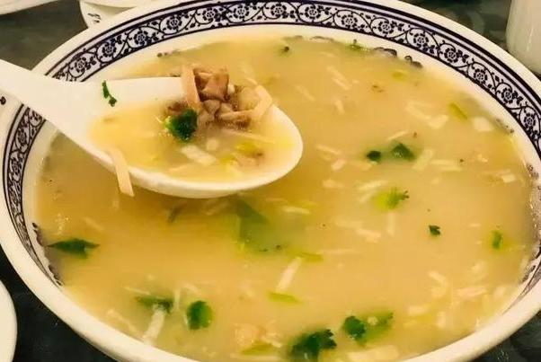
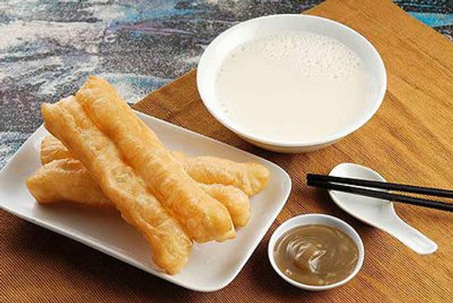
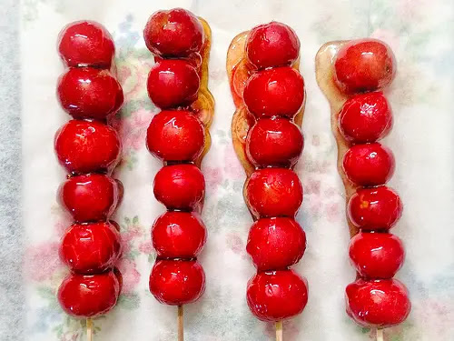

Spicy Lamb Soup is Changchun’s ultimate winter comfort food—warm, hearty, and packed with flavor, it’s designed to chase away the cold. Made with tender lamb shanks simmered for hours in a broth seasoned with chili peppers, Sichuan pepper, ginger, and star anise, this soup is a staple in local eateries.The key to a good bowl is the broth: it’s rich and milky (from the long simmering of lamb bones) with a spicy kick that lingers but doesn’t burn. The soup is served with thick wheat noodles (chewy and absorbent) or "mantou" (steamed buns) for dipping. Toppings usually include shredded cabbage, bean sprouts, and a sprinkle of cilantro—add a dash of vinegar for extra tang if you like.Locals often eat it for breakfast or dinner, and it’s common to see groups of friends sharing a large pot, laughing and warming up together.
Broth: Milky white, savory, and spicy—with a deep lamb flavor that’s not gamey (thanks to fresh local lamb). The chili and Sichuan pepper add a slow, warming heat that spreads through your chest.
Lamb: Tender and juicy—simmered till it falls off the bone. It’s cut into small pieces, so every spoonful has meat.
Noodles/Buns: Thick wheat noodles soak up the broth, while mantou (steamed buns) are soft and absorbent—perfect for sopping up every last drop of soup.
Small Eateries/Street Stalls: 15–25 CNY/bowl (includes noodles and lamb; extra lamb +5 CNY).
Mid-Range Restaurants: 30–40 CNY/bowl (larger portion, plus side dishes like pickled cucumbers).
Breakfast Special: 12–18 CNY/bowl (served with a small mantou for dipping).

Youtiao (fried dough sticks) and Doujiang (soybean milk) are Changchun’s classic breakfast combo—affordable, filling, and beloved by locals of all ages.Youtiao are long, thin strips of dough made with wheat flour, yeast, and a pinch of baking soda. The dough is twisted into a figure-eight shape and deep-fried till golden and crispy. Good youtiao should be crunchy on the outside and slightly fluffy on the inside—no oily aftertaste.Doujiang (soybean milk) is made by grinding soaked soybeans and boiling the mixture. Locals prefer it "sweet" (with a dash of sugar) or "salty" (topped with chopped pickles, dried shrimp, and sesame oil)—in Changchun, sweet doujiang is more common for breakfast.This combo is sold at almost every street stall and breakfast shop—locals grab a youtiao in one hand and a bowl of doujiang in the other, eating on their way to work or school.
Youtiao: Crunchy on the outside, light and airy on the inside—with a subtle wheat flavor. It’s not too salty, so it pairs perfectly with sweet doujiang.
Sweet Doujiang: Smooth and creamy, with a mild soybean taste and a hint of sweetness. It’s warm and comforting, ideal for cold mornings.
Pairing: The crunch of the youtiao contrasts with the smooth doujiang—every bite and sip feels balanced.
Street Stalls/Breakfast Shops: 2 CNY per youtiao; 3–5 CNY per bowl of sweet doujiang. The classic combo (2 youtiao + 1 bowl of doujiang) costs 7–9 CNY—enough for a filling breakfast.
Premium Versions: Some shops offer "golden youtiao" (fried with egg in the dough) for 3 CNY each, or "nutty doujiang" (added with peanuts or walnuts) for 6–8 CNY per bowl.

Candied Hawthorns, or "Bingtang Hulu," is a iconic winter snack in Changchun—and across Northeast China. It’s made by skewering fresh hawthorn berries (small, red, and slightly tart) on bamboo sticks, then dipping them in a thick, clear sugar syrup that hardens into a crisp shell when cooled.In Changchun, Bingtang Hulu is more than just a snack—it’s a winter tradition. You’ll see vendors selling it on almost every street corner, especially near parks and shopping areas. The hawthorns are often pitted (to avoid bitterness), and some vendors add variations: wrapping the hawthorns in a thin layer of rice paper (to prevent the sugar shell from sticking to your hands) or adding a slice of orange or apple between hawthorns for extra sweetness.It’s the perfect balance of sweet and tart: the crisp sugar shell melts in your mouth, while the hawthorn inside adds a refreshing tang. It’s also a popular souvenir—many tourists buy a stick to eat while exploring the city’s winter sights.
Sugar Shell: Crisp, sweet, and slightly glassy—melts quickly on the tongue, with no grainy texture (a sign of well-made syrup).
Hawthorn: Tart and juicy, with a firm texture—cuts through the sweetness of the sugar, so it never feels cloying.
Variations: Hawthorns wrapped in rice paper add a subtle chewiness; orange slices add a citrusy sweetness that complements the tart hawthorn.
Street Vendors: 5–8 CNY per stick (standard size, 5–6 hawthorns).
Specialty Shops: 8–12 CNY per stick (pitted hawthorns, rice paper wrapping, or fruit additions like orange/apple).
Gift Boxes: 30–50 CNY (contains 5–8 sticks, vacuum-sealed—great for souvenirs, as they stay fresh for 3–5 days).